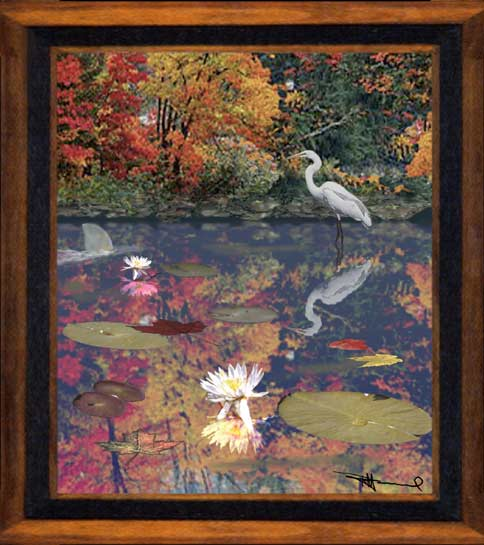

Watch Out! Paintage, watercolor. Perhaps a dozen photographs were merged and painted over in this paintage. As shown here, we should not let ourselves always be beguiled by beauty, for sometimes danger lurks within.
Next
painting.
Return
to Gallery 3
Home